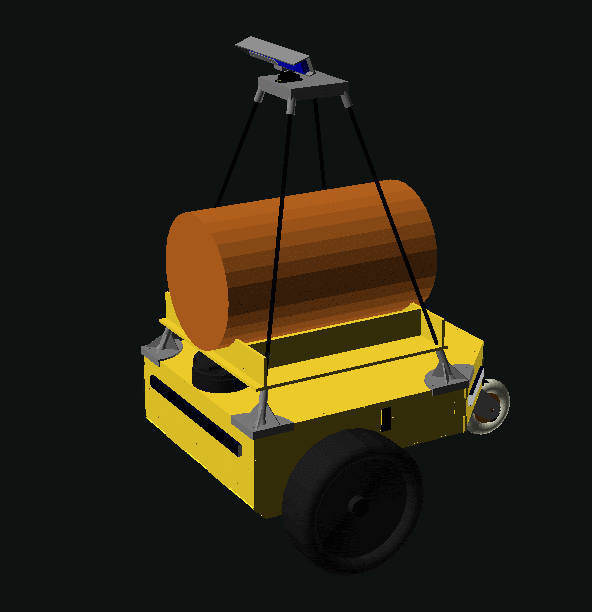

<meta charset="utf-8">
<meta name="viewport" content="width=device-width, initial-scale=1">
<title>ARBot</title>
<link rel="icon" href="assets/img/arbot-logo.png">
<link rel="preconnect" href="https://fonts.googleapis.com">
<link rel="preconnect" href="https://fonts.gstatic.com" crossorigin>
<link rel="stylesheet" href="https://fonts.googleapis.com/css2?family=Archivo:wght@500;600;700&amp;family=JetBrains+Mono:wght@400;600&amp;family=Newsreader:opsz,wght@6..72,400;6..72,500;6..72,600&amp;display=swap">
<link rel="stylesheet" href="assets/site.css">

<header class="sitehead">
  <a class="brand" href="index.html"><span>ARBot</span></a>
  <nav>
      <a href="index.html" class="on">Úvod</a>
      <a href="pages/prezentace.html">Jak to funguje</a>
      <a href="pages/umisteni-v-soutezich.html">Umístění v soutěžích</a>
      <a href="pages/verze.html">Verze</a>
      <a href="pages/model-diferencialniho-podvozku.html">Model podvozku</a>
      <a href="pages/detekce-kraje-vozovky.html">Detekce kraje vozovky</a>
      <a href="pages/kontakt.html">Kontakt</a>
  </nav>
</header>

<main>

<header class="hero">
  <div class="hero-in">
    <p class="eyebrow">Autonomní mobilní robot &middot; hobby projekt</p>
    <h1>ARBot</h1>
    <p>Z místa A na místo B &mdash; po parkových cestách, bez řidiče a bez cizí pomoci.</p>
    <p class="sub">Vozítko a hlavně algoritmy, které mu umožní aspoň to, co zvládne mravenec
       nebo včela: zvolit si rozumnou trasu, vyhnout se kolizím a ochránit samo sebe.</p>
  </div>
</header>

<section class="first">
  <p class="eyebrow">Úvod</p>
  <h2>Co ARBot je a kam míří</h2>
  <p class="lead">ARBot je malý autonomní robot, který vznikl jako hobby projekt. Počátečním cílem
     bylo sestrojit vozítko a zejména vymyslet algoritmy, které umožní alespoň to co dokáže mnohý
     hmyz jako třeba mravenec či včela. Z místa A se dostat na místo B. Zvolit si v jistém smyslu
     optimální trasu, vyhnout se kolizím a chránit sama sebe před poškozením.</p>
  <p>Postupem času byl cíl přeformulován. Dnes je snahou uspět v soutěžích typu Robotour a Robotem
     rovně, kde se roboty musí dostat ze startovního místa do cíle ideálně po co nejkratší cestě.
     Pohybují se především po parkových cestách, nesmí vyjet na trávník, vyhýbají se přirozeným
     i umělým překážkám a neubližují kytičkám a přihlížejícím. A to vše zcela autonomně bez cizí
     pomoci.</p>
  <p>Kde je budoucnost? Jaký složitější cíl si vytknout než účast v silničním provozu, ale to je
     ještě hodně a hodně daleko.</p>
</section>

<figure class="model">
  
  <figcaption><b>Model robota.</b> Žlutý podvozek na dvou hnaných kolech, nahoře stožár se senzory
    a mezi nimi náklad &mdash; na Robotouru se vozí soudek.</figcaption>
</figure>

<section>
  <p class="eyebrow">Kam dál</p>
  <h2>Rozcestník</h2>
  <div class="linkcards">
    <a href="pages/prezentace.html">
      <h3>Jak to funguje &rarr;</h3>
      <p>Co se robotovi odehrává v hlavě: vidění, lokalizace, plánování a řízení &mdash;
         vysvětlené od nuly, se schématy a snímky ze skutečných jízd.</p>
    </a>
    <a href="https://github.com/AlesRuda/ARBot3">
      <h3>Zdrojový kód &rarr;</h3>
      <p>Celý projekt je veřejný na GitHubu, včetně vývojové dokumentace, deníku rozhodnutí
         a naměřených čísel ke každému tvrzení.</p>
    </a>
    <a href="pages/umisteni-v-soutezich.html">
      <h3>Umístění v soutěžích &rarr;</h3>
      <p>Výsledky z Robotouru a Robotem rovně.</p>
    </a>
  </div>
</section>

<footer>
  <div class="foot-in">
    <span class="mono">ARBOT &middot; AUTONOMNÍ MOBILNÍ ROBOT</span>
    <span>Zdrojový kód, vývojová dokumentace a měření:
      <a href="https://github.com/AlesRuda/ARBot3">github.com/AlesRuda/ARBot3</a></span>
  </div>
</footer>

</main>
